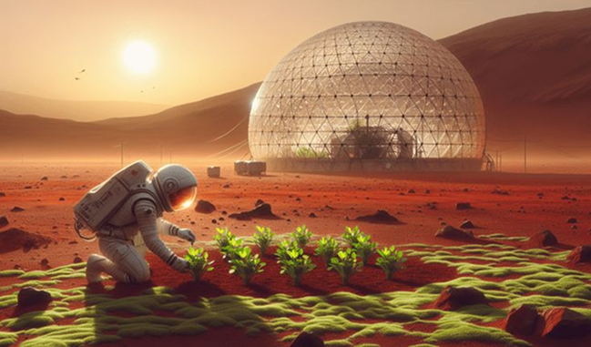

SOBRE O PROJETO
Uma solução inteligente para monitorar, calcular e planejar cultivos de alimentos em Marte, garantindo um futuro sustentável para a humanidade.

⚠️ O PROBLEMA
Marte apresenta diversos obstáculos para a agricultura. Sem sistemas inteligentes de monitoramento, o desperdício de recursos pode comprometer a sobrevivência de uma colônia.
- ⚠️ Solo inadequado para cultivo convencional
- ⚠️ Escassez de água
- ⚠️ Baixas temperaturas
🌱 NOSSA SOLUÇÃO
uma plataforma digital desenvolvida para acompanhar o desenvolvimento das plantações em Marte.
O sistema permite:
- ✅ Calcular a taxa de crescimento diária
- ✅ Calcular a densidade de plantio
- ✅ Monitorar plantações
🚀 TECNOLOGIAS UTILIZADAS
HTML5
Responsável pela estruturação de todas as páginas do sistema.
CSS
Utilizado para criar a identidade visual, proporcionando uma interface intuitiva.
JAVASCRIPT
Responsável pela interatividade do sistema e pelos cálculos agrícolas.